Note: The Card Creator tools are tested using Google Chrome only.
Use this navigation to get the prebuilt HTML for the 10 markets that have podcasts, the template for the rest of the markets, an example podcast page from Content Studio, and create new cards with the card creators.
Note: the templates for the markets with podcasts have a display error for the top podcast cards, but they display fine once in content studio. It's because they are referencing a stylesheet that is optimized for content studio.
Note: I use GIFs to help explain the documentation. Click the GIFs to start/stop playback. If while playing, you notice a GIF is too small for you to see well, right click it and select "Open Image in New Tab"
<!-- ****** PASTE MARKET PODCAST FROM CARD CREATOR HERE ****** --> <div> section that has the market's section heading, remove the comment tags so this <div> section goes live, and update the text from "Market Podcasts" to whatever market you are editing, i.e. "Sacramento Bee Podcasts"<style> tag. Just below this you will see a comment /*MARKET ACCENT COLOR */ , change that accent color to the accent color of the market. You can find this info on our Frontify page.In the top navigation, click “Top Podcast Card Creator”
From here, you need to enter the new podcast information. The first step is adding the artwork.
Artwork should be 500x500 pixels. If the artwork has an all white background, please edit it so it has some sort of border around it.
Artwork has to be hosted online, so create a new Article in Content Studio that will promote the podcast. Write a short story about it and add the artwork as a related image. Publish this article, and navigate to it in Chrome.
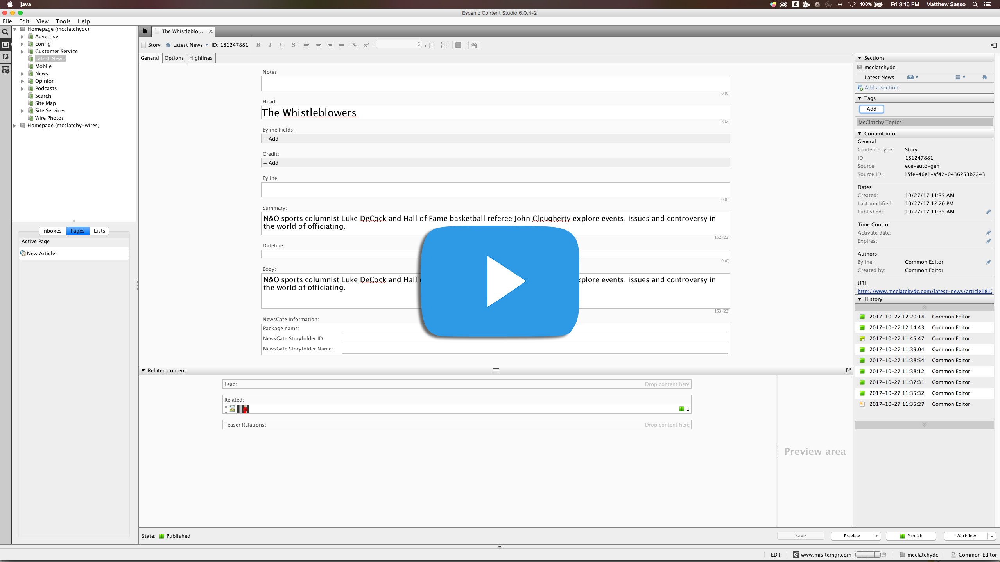
Right click on the artwork and select “Open image in new tab.” Click and hold on the artwork image in that new window, drag your mouse and the image to anywhere on the Podcast Creator page. The image should then display in a new preview card
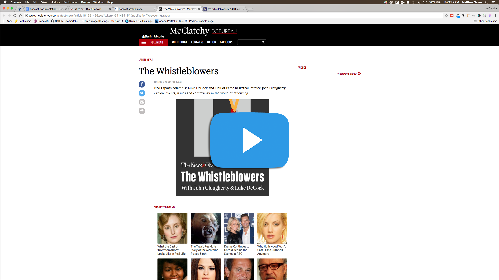
After the artwork has been added, the next step is adding all the podcast details. You need to enter the image’s Alt text, Podcast title, Podcast description, and URLs to any services that host the podcast audio. This is shown in the image below
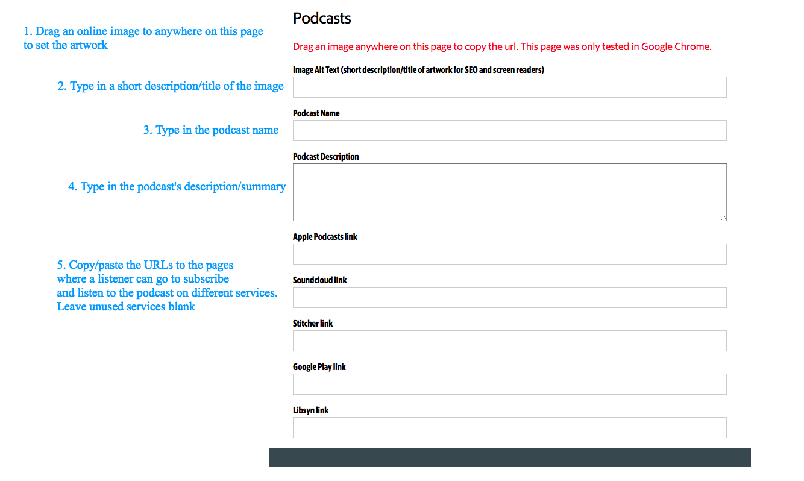
Click the "Get Code and Notify McClatchy" button
You should now have a page that looks like this, with a preview of the card and the code output:
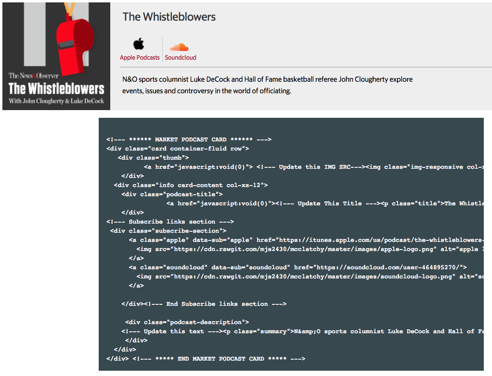
Highlight all of the code, right click, and copy it
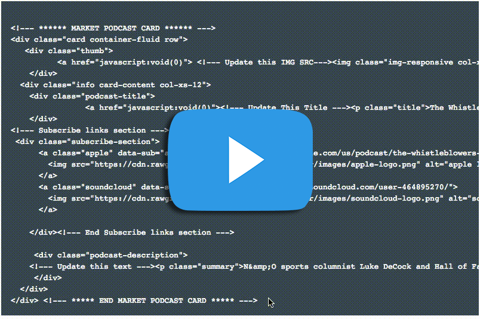
If the marekt you are working with already has its own podcasts, head over to the market's Content Studio. In the file tree you will see "Podcasts", double or triple click that until it opens a new tab. There you will see Banner Options and one of the nested pages under Banner Options is "Podcasts." Double or triple click that until it opens. Now you will see the HTML for the Podcast landing page. I have left comments in the HTML labeled <-- ****** MARKET PODCAST CARD ****** --> and <-- ****** END MARKET PODCAST CARD ****** --> After the last (there are only 3 at the time of writing this) <-- ****** END MARKET PODCAST CARD ****** --> paste the code you copied from the Card Creator. This is shown in the GIF below:
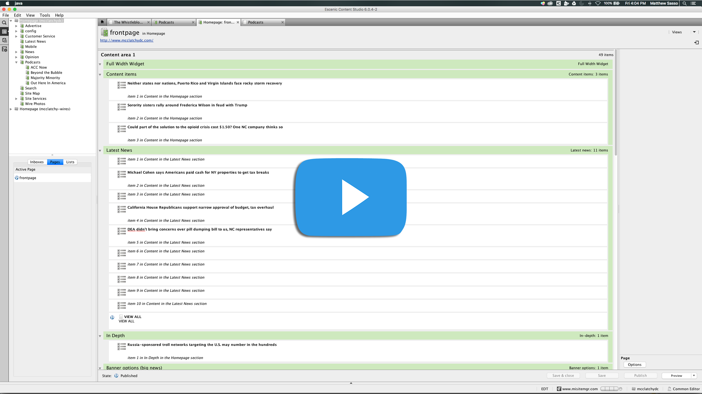
If the market had no previous podcasts, the instructions are the same up until you get to the point where you have to paste into Content Studio, those instructions are as follows:
In the market's Podcast Free HTML widget page, find the comment < !--********** PASTE MARKET PODCAST FROM CARD CREATOR HERE ************** --> and paste your HTML from the Card Creator tool on the next line
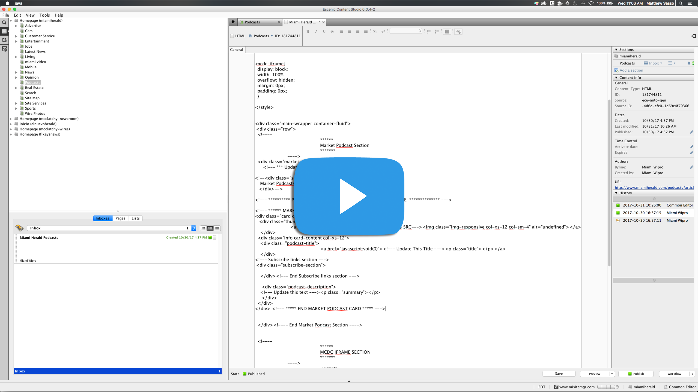
Next, just above the <!--********** PASTE MARKET PODCAST FROM CARD CREATOR HERE ************** --> comment, you will see a commented out section labeled <!--**** Update this with Market name ****-->
Remove the beginning of the comment tag <!-- that is just before the <div> tag that is under the <!--**** Update this with Market name ****-->
Remove the end of the comment tag --> that is just after the ending </div> tag at the end of this "Market Podcasts" section. What these comment tags look like is shown below
Change the text "Market Podcasts" to whatever market you are working on, i.e. "Sacramento Bee Podcasts"
Next, in line 4, you will see the start of a "style" tag, and in that style section you will see the comment /* MARKET ACCENT COLOR */
That 6 digit HEX code needs to be changed to the HEX code associated with the specific market's accent color
To find this HEX color code, head to our McClatchy Frontify Style Guide
In the left navigation, you will see a list of all our markets, click on the market you are editing, now you will see two colors, one primary and one accent
Copy that HEX code from the "#" all the way to the last digit. Paste it over the HEX code in the style section of our HTML in Content Studio
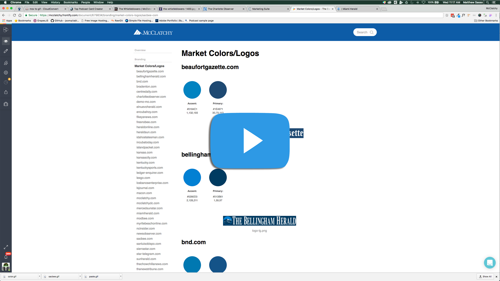
Click "Publish" and you are done with part 1!
In the top navigation, click "Around/Archive Podcast Card Creator"
Add all the podcast details just like in Part 1, but you do not need an image for artwork
Highlight and copy all of the output code. The next step is where Part 2 varies from Part 1
This process can vary depending on the FTP client you use, but for this document demo below, I am using Filezilla. The first step is to log in with McClatchy DC's FTP credentials
On the right panel of Filezilla, navigate to mi00s/McClatchyDC/static/creatives/podcasts. Here you will see a file named "around-archive-podcast-iframe.html"
Double click that file and it will download it to whatever folder on your computer that you have open in the left panel
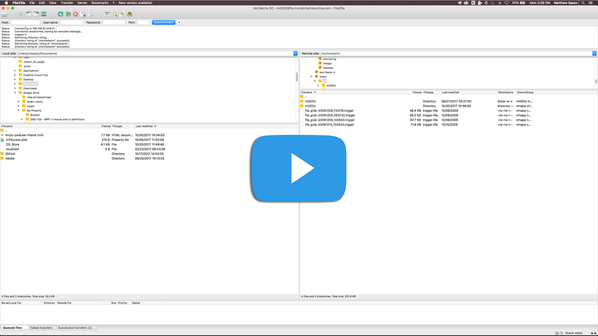
Now, using Finder (Mac) or Explorer (Windows), navigate to where you downloaded the file. In my example below, I downloaded it to my Documents folder
Right click it, and open it with your favorite text editor. I used Adobe Brackets, but I also recommend Notepad++ or Sublime Text
In this HTML you will see comments that tell you what region the code block is for, such as <!--- Midwest ---->
Depending on what region your market is in, i.e. California, The Carolinas, The Midwest, The Northeast, or the Southeast, you will change where you need to paste the output HTML from the Card Creator Tool
You will need to go to the area in the HTML that is specific to your market. Each podcast is contained in a <li> </li> tag. After the last podcast, after its ending </li> tag, paste your HTML code from the Card Creator Tool.
We will be using the Carolinas as the region in the example below:
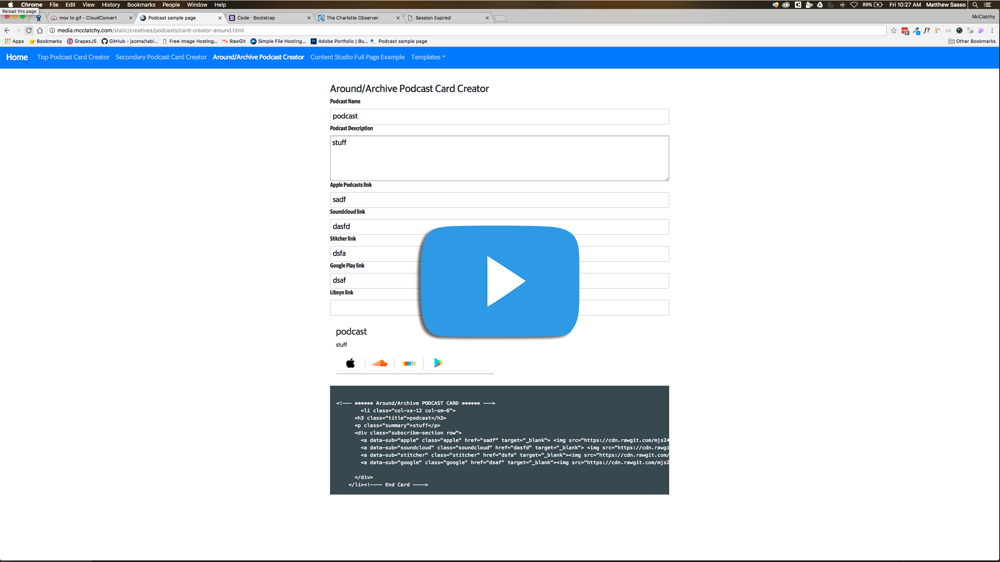
Next, back in the top left area of the Filezilla toolbar you will see a blue and a green arrow creating a sort of circle, this is the Refresh button. Click that to make sure it has the most recent save of the HTML file you just edited/saved
Now that it's refreshed, find your "around-archive-podcast-iframe.html" file in the left pane. Double click it. This will send it over Filezilla to the FTP server
Filezilla will warn you that this file already exists, the "overwrite" radio button should already be selected, so just click "Ok" to upload the file and overwrite the old one. Now you're done!
In the top navigation, click “Top Podcast Card Creator”
From here, you need to enter the new podcast information. The first step is adding the artwork.
Artwork should be 500x500 pixels. If the artwork has an all white background, please edit it so it has some sort of border around it.
Artwork has to be hosted online, so create a new Article in Content Studio that will promote the podcast. Write a short story about it and add the artwork as a related image. Publish this article, and navigate to it in Chrome.
Right click on the artwork and select “Open image in new tab.” Click and hold on the artwork image in that new window, drag your mouse and the image to anywhere on the Podcast Creator page. The image should then display in a new preview card
After the artwork has been added, the next step is adding all the podcast details. You need to enter the image’s Alt text, Podcast title, Podcast description, and URLs to any services that host the podcast audio. This is shown in the image below
Click the "Get Code and Notify McClatchy" button
You should now have a page that looks like this, with a preview of the card and the code output:
Highlight all of the code, right click, and copy it
Head over to the McClatchy DC Content Studio. In the file tree you will see "Podcasts", double or triple click that until it opens a new tab. There you will see Banner Options and one of the nested pages under Banner Options is "Podcasts." Double or triple click that until it opens. Now you will see the HTML for the Podcast landing page. I have left comments in the HTML labeled <-- ****** MARKET PODCAST CARD ****** --> and <-- ****** END MARKET PODCAST CARD ****** --> After the last (there are only 3 at the time of writing this) <-- ****** END MARKET PODCAST CARD ****** --> paste the code you copied from the Card Creator. This is shown in the GIF below:
Click "Publish" and you are done with part 1!
In the top navigation, click "Secondary Podcast Card Creator"
The next few steps will be the same as in Part 1, so I recommend using the same artwork image source as in Part 1, and drag and drop it to anywhere on the page just like detailed above
Add all the podcast details just like in Part 1
Click the "Get Code and Notify McClatchy" button
Highlight and copy all of the output code. The next step is where Part 2 varies from Part 1
This process can vary depending on the FTP client you use, but for this document demo below, I am using Filezilla. The first step is to log in with McClatchy DC's FTP credentials
On the right panel of Filezilla, navigate to mi00s/McClatchyDC/static/creatives/podcasts. Here you will see a file named "mcdc-podcast-iframe.html"
Double click that file and it will download it to whatever folder on your computer that you have open in the left panel
Now, using Finder (Mac) or Explorer (Windows), navigate to where you downloaded the file. In my example below, I downloaded it to my Documents folder
Right click it, and open it with your favorite text editor. I used Adobe Brackets, but I also recommend Notepad++ or Sublime Text
In this HTML, you will see comments identifying the Beyond the Bubble, Majority Minority, and Out Here In America podcasts
After Out Here in America, right after the comment that says <-- end out here in america --> , right click and paste your copied code from the Secondary Podcast Card Creator
Save this file, and return to your open Filezilla window
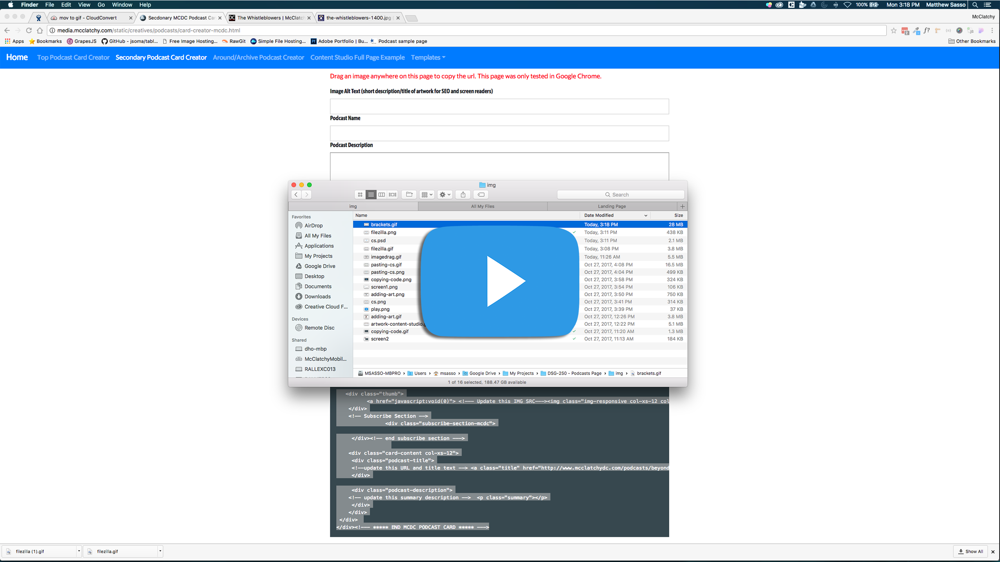
First, in the top left area of the Filezilla toolbar you will see a blue and a green arrow creating a sort of circle, this is the Refresh button. Click that to make sure it has the most recent save of the HTML file you just edited/saved
Now that it's refreshed, find your "mcdc-podcast-iframe.html" file in the left pane. Double click it. This will send it over Filezilla to the FTP server
Filezilla will warn you that this file already exists, the "overwrite" radio button should already be selected, so just click "Ok" to upload the file and overwrite the old one. Now you're done!
<div> tag that the card is in, and delete all of it<div> tag that the podcast card is in, and delete it <!----
*******
Archived Podcast Section
*******
----><li> tag you copied from the card creator after the last </li><!---- *****
*********
Around McClatchy Podcast Section
*********
*******----> find the region of the market your podcast is in<li> tags that contain each podcast. Find the podcast that you are working with<li> to </li> and cut it <!----
*******
Archived Podcast Section
*******
----><li> tag you cut from above after the last </li>